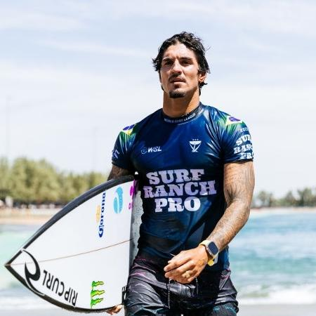

Gabriel Medina Pinto Ferreira (São Sebastião, 22 de dezembro de 1993), é um surfista profissional e medalhista olímpico brasileiro. Mais conhecido por ser o tri-campeão mundial de surf da ASP World Tour de 2014, 2018 e 2021, sendo o primeiro brasileiro a vencer um mundial de Surf. Em 2009, assinou contrato com a empresa australiana Rip Curl e se profissionalizou. Em 2013, com 19 anos, ganhou o World Junior Tour. Aos 17 anos ingressou na ASP World Tour (WCT). sendo o mais jovem brasileiro a ingressar no circuito mundial.
De ascendência chilena, Gabriel começou a surfar aos nove anos. Aos onze, venceu seu primeiro campeonato em nível nacional, a etapa Rip Curl Grom Search na categoria Sub-12, disputada em Búzios, Rio de Janeiro.
A partir daí, venceu campeonatos do Brasileiro Amador e foi campeão dos circuitos Volcom Sub-14, Quicksilver King of Groms, Rip Curl Grom Search e tricampeão Paulista. Na Califórnia (EUA), foi vice do Volcom Internacional Sub-14 e, no Equador, vice-campeão do Mundial Amador Sub-16.
Aos catorze anos já fazia as finais nas competições do Paulista Profissional e participou de etapas do Mundial Profissional, quando, em Ubatuba, São Paulo, conseguiu derrotar seu ídolo Adriano Mineirinho.